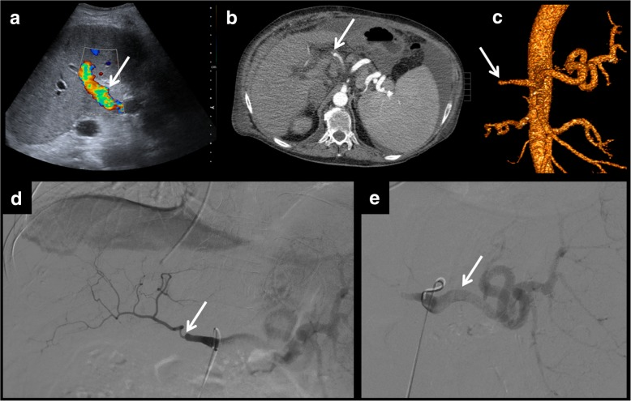
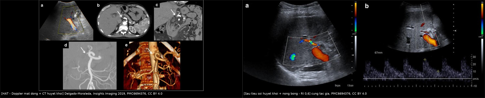
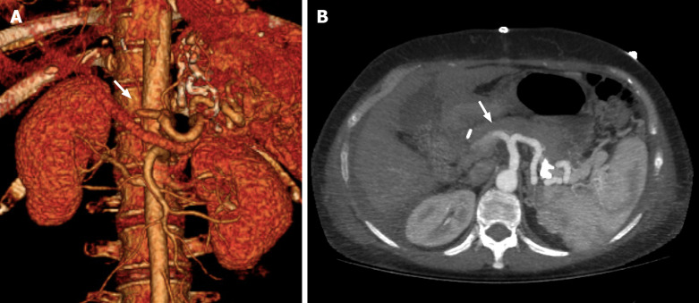
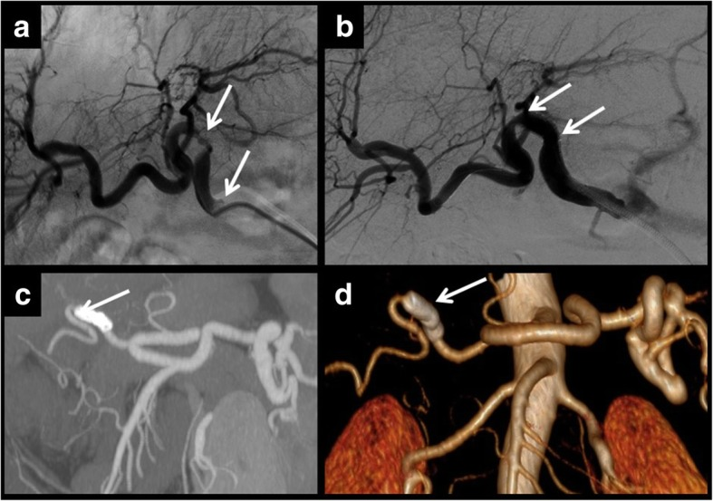
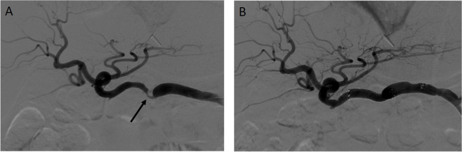
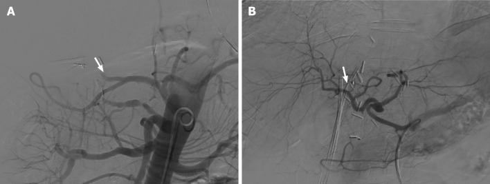
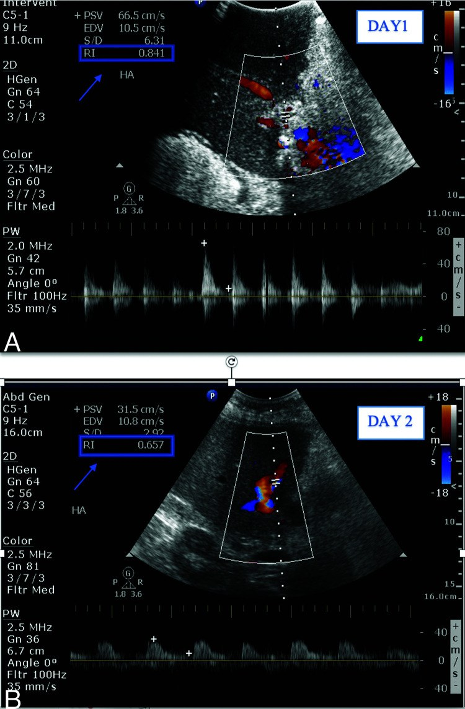
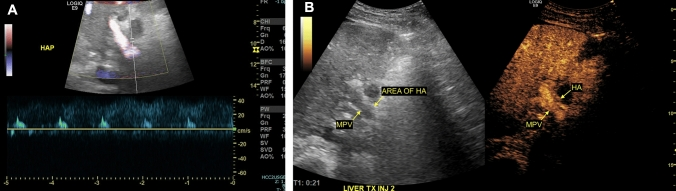
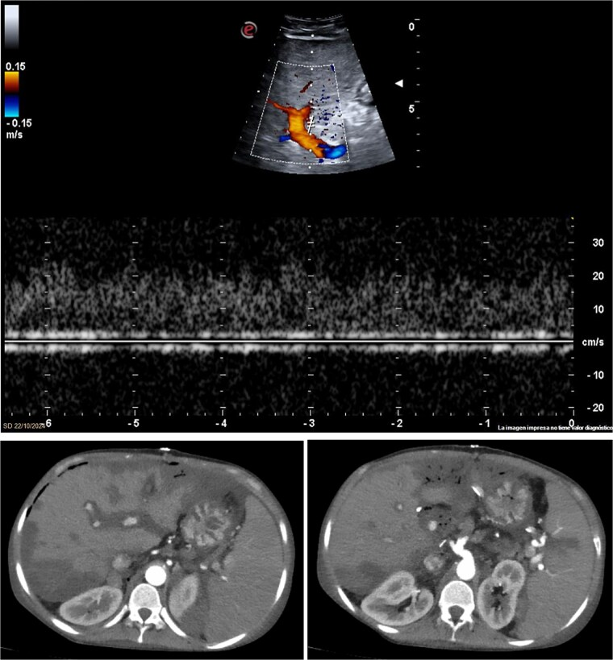
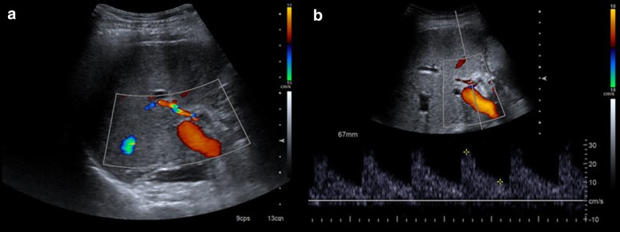

1913 — Hẹp & huyết khối động mạch gan sau ghép gan: phổ "tardus-parvus", PSV > 200 cm/s, RI < 0,5 — và cái bẫy RI > 0,8 trong 3 ngày đầu / Hepatic artery stenosis & thrombosis after liver transplantation
Tags: pattern:hep-mach pattern:tac-mach pattern:huyet-khoi pattern:mat-song-toc-do pattern:giai-doan-toc-do pattern:nhoi-mau-gan pattern:giai-doan-ngam-thuoc vung:gan vung:dong-mach-gan vung:mieng-noi score:RI score:PSV score:SAT protocol:Doppler protocol:CEUS protocol:CTA-3-thi protocol:DSA protocol:nong-bong protocol:stent
Mức chắc chắn (certainty): tổng hợp y văn (literature synthesis) — số liệu lấy từ các bài open-access đã đọc toàn văn: Delgado-Moraleda et al., Insights Imaging 2019 (PMC6694376, CC BY 4.0 — tổng quan hình ảnh có ảnh gốc); Lindner C et al., World J Transplant 2024 (PMC10989478, CC BY-NC 4.0 — tổng quan chẩn đoán HAT, ảnh CTA/DSA); Chau et al., Abdom Radiol 2025 (PMC11794643, CC BY 4.0 — CEUS và dấu "water-hammer", "bright band"); Pons et al., J Surg Case Rep 2025 (PMC12494202, CC BY 4.0 — ca nguyên văn HAT sau ghép lần 3); Desai et al., CVIR Endovasc 2024 (PMC11032299, CC BY 4.0 — can thiệp trong/ngoài gan); Shaaban Abdelgalil et al., CVIR Endovasc 2025 (PMC12501083, CC BY 4.0 — meta PTA vs stent); Minciuna et al., Transpl Int 2023 (PMC10716223, CC BY 4.0 — giá trị Doppler định kỳ); Babikir et al., Saudi Med J 2024 (PMC11463573, CC BY-NC 4.0 — RI ngày 1 → ngày 5). Bổ sung 2026-11-10: J Clin Med 2025 (PMC12251336 — 532 ca, HAT 2,4%, 66,6% không triệu chứng, ghép lại 46,1%); Rev Col Bras Cir 2026 (PMC13142963 — 1.362 ca, 2,6%, 43,8% phát hiện trong 48 giờ, tử vong 11–60%); Transpl Int 2024 (PMC11692146 — kháng kết tập tiểu cầu aHR 0,18); 2023 (PMC9955988 — trẻ 6,75%, miệng nối < 2 mm). Bài không có ca nguyên văn riêng của nhóm; ca 1–3 là ca nguyên văn của nguồn, ghi rõ Fig.
Câu hỏi gốc của bài: bệnh nhân ngày 3 sau ghép gan, sốt nhẹ, ALT/AST tăng vọt, siêu âm không thấy tín hiệu màu của động mạch gan, nhưng phổ bắt được lại có đỉnh tâm thu bình thường và đảo dòng tâm trương — "trông như phổ bình thường". Vậy: đây là huyết khối, là co thắt, hay là phổ giả? khi nào cần CEUS/CTA, khi nào chọc mạch can thiệp, và vì sao RI 0,85 ở ngày 1–3 KHÔNG được gọi là bệnh lý? Điểm tựa: sau ghép gan, động mạch gan là nguồn máu DUY NHẤT của đường mật và của miệng nối đường mật (động mạch của mảnh ghép không có tuần hoàn bàng hệ, vì các nhánh nối đã bị thắt khi lấy tạng). Vì thế tắc động mạch = hoại tử đường mật/gan, chứ không chỉ là "thiếu máu thoáng qua". Chẩn đoán dựa trên ba con số phổ Doppler (RI, PSV, SAT) + nhìn trực tiếp chỗ hẹp, và luôn phải loại trừ bẫy sinh lý của 3 ngày đầu.
1. Tổng quan — vì sao động mạch gan là "cửa tử" của mảnh ghép, và vì sao phổ Doppler đổi hình dạng
A. Bệnh học (pathology) và cơ chế:
- Giải phẫu bất thường sau ghép: gan nhận ~75% máu từ tĩnh mạch cửa, ~25% từ động mạch gan, nhưng đường mật chỉ sống bằng động mạch gan. Sau ghép, động mạch gan của mảnh ghép là một ống nối tận–tận hoặc tận–bên duy nhất, các nhánh nối quanh đường mật đã bị thắt → không có tuần hoàn bàng hệ. Do đó tắc động mạch gây hoại tử biểu mô đường mật → hẹp/hoại tử đường mật (ischemic-type biliary lesion, ITBL) và nhồi máu nhu mô; nhồi máu gan gắn với tắc động mạch trong 85% ca (PMC6694376).
- Huyết khối động mạch gan (hepatic artery thrombosis, HAT): 4–12% ca ghép, chiếm > 50% biến chứng động mạch và là nguyên nhân hàng đầu của mảnh ghép không chức năng (PMC6694376). Chia sớm (< 30 ngày) — thường do kỹ thuật (xoắn, hẹp miệng nối, mảnh ghép nhỏ, dòng chảy thấp) — và muộn — thường do hẹp tiến triển hoặc thải ghép mạn.
- Hẹp động mạch gan (hepatic artery stenosis, HAS): 2–13% ở miệng nối (PMC6694376), thời gian trung vị tới chẩn đoán 3 tháng, phần lớn trong năm đầu (PMC11794643); nguyên nhân: sang chấn khi mổ, gập/xoắn mạch, chèn ép từ ngoài, và viêm/thải ghép cấp góp phần.
- Tần suất chung biến chứng mạch máu: ~7% ghép gan từ người chết não, ~13% ghép gan sống cho (PMC6694376) — vì LDLT có nhiều miệng nối nhỏ hơn.
- Vì sao hẹp → phổ "tardus-parvus" ở đoạn xa: hẹp làm giảm áp lực tưới máu đoạn xa; giường mạch gan đáp ứng bằng giãn tiểu động mạch (giảm sức cản). Trên Doppler, sức cản ngoại vi thấp nghĩa là dòng tâm trương còn nhiều → RI giảm < 0,5**; đồng thời sóng tâm thu **lên chậm và tù đầu** (kéo dài **thời gian tăng tốc tâm thu, SAT > 0,08 giây) — đây là hình dạng của "áp lực đến muộn và yếu", không phải hình dạng của mạch bị tắc.
- Vì sao tại chỗ hẹp lại có vận tốc rất cao: theo phương trình liên tục, vận tốc tỉ lệ nghịch với diện tích lòng mạch; hẹp > 50% đường kính làm PSV > 200 cm/s và gây aliasing khi vượt giới hạn Nyquist của thang đo. Aliasing là giới hạn kỹ thuật, không phải "dòng xoáy bệnh lý".
- Vì sao đoạn TRƯỚC hẹp có RI cao (> 0,8): đoạn trước hẹp phải đẩy máu qua một cửa hẹp → sức cản tăng → RI tăng, đỉnh tâm thu cao. Vì vậy RI cao ở đoạn gần + RI thấp ở đoạn xa là cặp dấu hiệu định vị chỗ hẹp, tốt hơn một con số đơn lẻ.
- Vì sao HAT lại cho phổ "water-hammer" (búa nước): khi động mạch tắc hoàn toàn, đoạn xa trở thành túi cụt đàn hồi; sóng áp lực dội lại tạo đỉnh tâm thu bình thường + giảm nhanh + đảo dòng tâm trương. Đây là phổ giả "trông khỏe" — bẫy kinh điển khiến người đọc bỏ sót HAT (PMC11794643).
- Vì sao 3 ngày đầu RI > 0,8 là bình thường: mảnh ghép phù sau bảo quản/thiếu máu–tái tưới máu, áp lực mô kẽ tăng → sức cản tăng; ~50% bệnh nhân có RI > 0,8 trong 3 ngày đầu, và về bình thường khoảng ngày thứ 4 (PMC6694376). Vì vậy RI đơn độc không dùng để chẩn đoán trong 72 giờ đầu — phải nhìn trực tiếp động mạch (màu, CEUS) và so sánh các nhánh trong gan.
B. Ngưỡng định lượng bắt buộc (cửa 1 Argon):
| Đại lượng | Con số đã kiểm chứng | Ý nghĩa thực hành |
|---|---|---|
| Biến chứng mạch máu sau ghép | ~7% (người chết não), ~13% (sống cho) (PMC6694376) | LDLT có nhiều miệng nối nhỏ → nguy cơ cao hơn |
| HAT | 4–12%; > 50% biến chứng động mạch; nguyên nhân hàng đầu gây mảnh ghép không chức năng (PMC6694376) | Biến chứng nặng nhất, thường phải can thiệp/mổ lại |
| HAT trong các đoàn hệ gần đây | 2,4% (532 ca; sớm 1,6%, muộn 0,7%) (PMC12251336); 2,6% (35/1.362), 43,8% phát hiện trong 48 giờ đầu (PMC13142963) | HAT sớm vẫn là thể chính; thời điểm phát hiện quyết định cứu mảnh ghép |
| HAT sớm KHÔNG triệu chứng | 66,6% ca HAT sớm không có triệu chứng, chỉ phát hiện nhờ Doppler thường quy (PMC12251336) | Lịch Doppler là biện pháp chẩn đoán, không phải xét nghiệm theo triệu chứng |
| HAT ở trẻ (ghép gan sống cho–nhận) | 6,75% (27/400); đường kính miệng nối < 2 mm là yếu tố nguy cơ độc lập (PMC9955988) | Trẻ nhỏ = mạch nhỏ → ngưỡng nghi thấp hơn, dùng đầu dò tần số cao |
| HAT sớm trong phân tích gộp | eHAT 4,4% / 21.822 ca ghép; tử vong 33,3% — trẻ 34,3% vs người lớn 25% (PMC10989478) | eHAT là cấp cứu, không phải biến chứng theo dõi; trẻ có tiên lượng xấu hơn |
| Giá trị Doppler theo lịch ở trẻ | PPV 92,3%; 55,8% biến chứng mạch chẩn đoán ngày 1–7; 94,7% biến chứng động mạch trong tuần đầu (PMC9668490; 92 ca) | Ở trẻ, Doppler tuần đầu gần như bắt hết biến chứng động mạch |
| Tử vong và mất mảnh ghép do HAT | Tử vong 11–60% (PMC13142963); ghép lại 46,1%, tử vong liên quan HAT 7,6%, mất ghép 9,2% ở theo dõi 86 tháng (PMC12251336) | HAT vẫn là biến chứng nguy hiểm nhất của ghép gan |
| Dự phòng bằng kháng kết tập tiểu cầu | aHR 0,18; ở nhóm có ≥ 1 yếu tố nguy cơ: 3,2% vs 21,3% (p < 0,001), không tăng chảy máu (PMC11692146) | HAT không chỉ là "lỗi kỹ thuật" — biến cố huyết khối có thể dự phòng |
| HAS tại miệng nối | 2–13% (PMC6694376); trung vị chẩn đoán 3 tháng, phần lớn trong năm đầu (PMC11794643) | Nghĩ tới khi men gan tăng mà không có nguyên nhân khác |
| PSV tại chỗ hẹp | > 200 cm/s + aliasing (bộ ba Dodd, PMC6694376; PMC11794643) | Đo đúng góc ≤ 60°, lấy phổ tại miệng nối |
| RI đoạn sau hẹp | < 0,5 (PMC6694376; PMC11794643) | Kèm SAT > 0,08 giây |
| SAT (thời gian tăng tốc tâm thu) | > 0,08 giây; ngưỡng chặt > 0,12 giây + RI < 0,4 giảm dương tính giả (Zheng 2018, dẫn trong PMC11794643) | Ngưỡng chặt dùng khi sàng lọc không triệu chứng |
| PSV đoạn xa trong tardus-parvus | ≤ 48 cm/s: nhạy 69%, đặc hiệu 99% cho HAS (Park, dẫn trong PMC11794643) | Giá trị đặc hiệu rất cao, dùng để chốt |
| RI đoạn trước hẹp | > 0,8 + đỉnh tâm thu cao (PMC6694376) | Dùng định vị chỗ hẹp |
| RI ngày 1–3 sau ghép | > 0,8 ở ~50% bệnh nhân, bình thường hóa ~ngày 4 (PMC6694376); ca minh họa 0,84 ngày 1 → 0,65 ngày 5 (PMC11463573) | Không chẩn đoán bệnh lý chỉ vì RI cao trong 72 giờ đầu |
| Doppler định kỳ (rDUS) | 708 người lớn: HAT 7,1%, PVT 8,2%, HVOO 3,1%; PPV 53,8%, NND 90,5; HAT chẩn đoán trung vị 4 ngày (PMC10716223) | Lợi ích có thật nhưng PPV thấp → luôn cần CEUS/CTA xác nhận |
| Thời điểm biến chứng sớm | POD 0: 26,9%, POD 1: 17,3%, POD 5: 17,3% (PMC10716223) | Lịch chụp phải phủ ngày 0–1 và ngày 7 |
| Tái huyết khối theo kiểu mổ lại | 12,5% (mạch cầu nối, AHCI) vs 47,3% (khâu lại miệng nối), p = 0,03; biến chứng mật 31,2% vs 47,4%; tử vong 12,5% vs 5,3% (PMC10874575; 37 ca eHAT) | Khi mổ lại, mạch cầu nối giảm tái huyết khối rõ rệt |
| Tiêu sợi huyết qua catheter | Thành công kỹ thuật tới 80%; urokinase ≤ 1,2 triệu U/24 giờ, ≤ 7 ngày (PMC12335213) | Chỉ có lợi khi chưa hoại tử lan rộng và cửa sổ còn |
| PTA vs stent (meta) | 9 nghiên cứu, 325 ca (PTA 140, stent 197): không khác độ thông 6/12 tháng, thành công kỹ thuật, biến chứng nặng, bóc tách, vỡ mạch, HAT; stent giảm can thiệp lại RR 0,57 (0,36–0,89), thời gian tới tái hẹp +36,42 tháng (14,14–58,70) (PMC12501083) | Stent không làm tăng biến chứng trong meta này; chọn theo hình thái và giải phẫu |
| Can thiệp trong gan vs ngoài gan | 21 thủ thuật/18 ca vs 27/22: tử vong liên quan gan 1 năm 10% vs 0% (p = 0,10), biến chứng 29% vs 4% (p = 0,015); ALT −72 vs −112,5 U/L (p = 0,60) (PMC11032299) | Khi giải phẫu bất lợi (góc gập > 90°), can thiệp mạch ngoài gan là lựa chọn an toàn |
| Giả phình ngoài gan | 2,5% ca ghép; nhiễm khuẩn thành giả phình tới 81% (PMC6694376) | Chống chỉ định chọc sinh thiết khi nghi giả phình nhiễm |
| Rò động–cửa sau sinh thiết | ~50% nếu sinh thiết trong tuần đầu, ~10% sau 1 tháng (PMC6694376) | Cân nhắc thời điểm sinh thiết |
| Ca nguyên văn (ghép lần 3) | nữ 25 tuổi, HAT ngày 3, ghép lần 4 cấp cứu, hồi phục hoàn toàn (PMC12494202) | HAT sớm sau ghép lại = chỉ định ghép lại, không chỉ can thiệp |
C. TẠI SAO ảnh trông như vậy (vật lý hình ảnh):
- Doppler màu: tín hiệu màu ∝ vận tốc trong cửa sổ; mất màu có thể do tắc thật hoặc do góc tới ~90°, thang đo (PRF) quá thấp, mô phủ, khí, cử động → mất màu một mình không đủ chẩn đoán.
- Phổ xung (spectral): RI = (PSV − EDV)/PSV. RI thấp = giường ngoại vi giãn (hẹp đoạn gần, viêm, shunt); RI cao = sức cản tăng (phù mảnh ghép, chèn ép, tắc đoạn xa). Vì RI là tỉ lệ, nó không phụ thuộc cung lượng tim — nhưng lại phụ thuộc vị trí lấy mẫu: luôn lấy trong gan (nhánh phải hoặc trái), không lấy ngay tại miệng nối.
- CEUS: vi bọt khí thuần lòng mạch, không vào mô kẽ → cho hình ảnh tưới máu thật theo thời gian thực. Trong HAT: nhu mô ngấm sớm qua tĩnh mạch cửa, còn động mạch gan ngấm muộn và cụt đột ngột (abrupt cutoff) (PMC11794643).
- CTA: cản quang trong lòng mạch → khuyết thuốc (filling defect) = huyết khối; không ngấm đoạn xa = tắc; MPR/MIP/VR cần thiết vì động mạch gan nhỏ (3–5 mm) và cong — lát ≤ 1 mm và dựng theo trục mạch.
- Nhồi máu gan trên CT: vùng giảm ngấm hình địa lý (geographic), thường ngoại vi/hình nêm, bờ thẳng theo phân thùy, không có hiệu ứng khối; khi hoại tử hóa lỏng hoặc nhiễm khí → ổ dịch + khí (dễ nhầm áp-xe).
- Siêu âm B-mode: nhồi máu = vùng giảm âm bờ không rõ; "dấu dải sáng" (bright band sign) = nhiều dải tăng âm thẳng cắt ngang vùng giảm âm → rất gợi ý nhồi máu, ít gặp trong áp-xe (PMC11794643).
2. Mẫu hình + chẩn đoán phân biệt theo vị trí (Gamut)
Gamut xếp theo cơ chế dòng chảy, vì cơ chế quyết định thủ thuật:
- Mẫu A — tắc hoàn toàn (HAT): mất tín hiệu màu trong lòng động mạch gan và không có phổ ở nhánh trong gan; hoặc phổ "water-hammer" giả khỏe; nhu mô giảm ngấm từng vùng hoặc nhồi máu. Điều trị: tiêu sợi huyết/nong bóng/stent nếu còn cửa sổ, mổ lại/ghép lại nếu mảnh ghép đã hoại tử.
- Mẫu B — hẹp khu trú tại miệng nối (HAS): PSV > 200 cm/s + aliasing tại chỗ hẹp; RI < 0,5 + SAT > 0,08 giây đoạn xa; RI > 0,8 đoạn gần. Điều trị: nong bóng trước, stent khi recoil/bóc tách.
- Mẫu C — hẹp gây "cướp máu" lách (splenic artery steal): động mạch lách giãn to, động mạch gan mảnh như sợi chỉ ở thì động mạch, tĩnh mạch gan phổ xoáy/rối loạn; lâm sàng suy gan sau ăn. Điều trị: nút động mạch lách (can thiệp mạch ngoài gan) — đúng nhóm EHAI của PMC11032299.
- Mẫu D — giả phình (pseudoaneurysm): túi ngấm thuốc thì động mạch, Doppler có dòng tiến–lùi "to-and-fro" trong cổ túi; ngoài gan 2,5%, thường nhiễm khuẩn (tới 81%). Điều trị: nút coil/stent phủ, không chọc vào túi.
- Mẫu E — rò động–cửa (arterioportal fistula): ngấm thuốc sớm thì động mạch ở các nhánh cửa; thường sau sinh thiết (~50% nếu làm trong tuần đầu). Điều trị: nút coil.
Gợi nhớ THAS: Thrombosis (HAT) · Hepatic artery stenosis (miệng nối) · Aneurysm (giả phình) · Steal (cướp máu lách).

Mẫu C: (a) siêu âm sau mổ — không xác định rõ động mạch gan, phổ tĩnh mạch gan rối loạn/xoáy; (b) CT thì động mạch — hẹp khu trú nặng động mạch gan và động mạch gan mảnh như sợi chỉ đoạn xa, trong khi động mạch lách giãn chiếm phần lớn lưu lượng. Đây là lý do phải đọc cả động mạch lách khi động mạch gan "yếu": hướng điều trị là nút động mạch lách (can thiệp mạch ngoài gan), không phải nong động mạch gan. Nguồn: Delgado-Moraleda et al., Insights Imaging 2019, PMC6694376 Fig. 6, CC BY 4.0. Bốn khung của cùng một bệnh nhân: (a) Doppler màu bình thường ở nhánh trong gan — nếu chỉ đọc màu thì không thấy hẹp; (b) phổ đoạn trước hẹp — đỉnh tâm thu cao, RI cao; (c) phổ tại chỗ hẹp — PSV 395 cm/s kèm aliasing; (d–e) chụp mạch xác nhận hẹp khu trú và nong bóng. Đây chính là lý do phải lấy phổ ở nhiều điểm, không chỉ một nhánh. Nguồn: Delgado-Moraleda et al., Insights Imaging 2019, PMC6694376 Fig. 4, CC BY 4.0.
Bốn khung của cùng một bệnh nhân: (a) Doppler màu bình thường ở nhánh trong gan — nếu chỉ đọc màu thì không thấy hẹp; (b) phổ đoạn trước hẹp — đỉnh tâm thu cao, RI cao; (c) phổ tại chỗ hẹp — PSV 395 cm/s kèm aliasing; (d–e) chụp mạch xác nhận hẹp khu trú và nong bóng. Đây chính là lý do phải lấy phổ ở nhiều điểm, không chỉ một nhánh. Nguồn: Delgado-Moraleda et al., Insights Imaging 2019, PMC6694376 Fig. 4, CC BY 4.0.
3. Bảng so sánh phân biệt (ma trận đối chiếu)
| Thực thể (entity) | Hình ảnh điển hình | Chốt vào (rule-in) | Chốt loại (rule-out) | Gợi ý xác nhận |
|---|---|---|---|---|
| Huyết khối động mạch gan (HAT) | Mất màu trong lòng mạch; không phổ ở nhánh trong gan; phổ "water-hammer" giả khỏe; nhồi máu gan hình địa lý | Khuyết thuốc trong lòng động mạch trên CTA + không ngấm đoạn xa; CEUS cụt đột ngột | Phổ ba pha bình thường ở nhánh trong gan → loại trừ tắc hoàn toàn | CTA ≤ 1 mm + MPR; CEUS; DSA nếu định can thiệp |
| Hẹp miệng nối động mạch gan (HAS) | PSV > 200 cm/s + aliasing tại chỗ hẹp; RI < 0,5** + **SAT > 0,08 giây đoạn xa; RI > 0,8 đoạn gần | Bộ ba Dodd (RI < 0,5; SAT > 0,08 giây; PSV > 200 cm/s) + nhìn thấy chỗ hẹp | PSV đoạn xa > 48 cm/s với phổ bình thường → ít khả năng hẹp có ý nghĩa | Doppler nhiều điểm; CTA; DSA + đo chênh áp |
| Cướp máu lách (splenic steal) | Động mạch lách giãn, động mạch gan mảnh, nhu mô giảm ngấm; tĩnh mạch gan phổ rối loạn | Động mạch lách > động mạch gan trên thì động mạch + suy gan sau ăn | Động mạch gan đều, PSV bình thường → không phải steal | CTA; DSA + nút động mạch lách |
| Giả phình động mạch gan | Túi ngấm thuốc thì động mạch; Doppler to-and-fro ở cổ túi; có thể vôi hóa viền | Túi ngấm thuốc đồng thì với động mạch, giữ hình ở thì muộn | Không có túi, dòng chảy đều → không phải giả phình | CTA; không sinh thiết xuyên túi; nút coil/stent phủ |
| Rò động–cửa | Nhánh cửa ngấm sớm thì động mạch; tĩnh mạch cửa giãn, đảo dòng | Ngấm thuốc cửa thì động mạch + tiền sử sinh thiết gần đây | Cửa chỉ ngấm thì cửa → không rò | CTA 3 thì; DSA + nút coil |
| Nhồi máu gan | Vùng giảm ngấm hình địa lý, bờ theo phân thùy; siêu âm dấu dải sáng; muộn → dịch hóa/kén | Phân bố theo lãnh thổ mạch + bằng chứng tắc/hẹp động mạch | Ngấm đồng nhất toàn gan → không nhồi máu | CEUS (giảm ngấm cả hai thì); CTA; theo dõi |
| Áp-xe gan (bắt chước nhồi máu) | Ổ dịch bờ rõ, khí trong ổ, viền ngấm thì động mạch kiểu vòng/honeycomb | Viền ngấm + khí + sốt cao, bạch cầu tăng | Giảm ngấm cả hai thì, không viền → nhồi máu, không áp-xe | CEUS phân biệt rõ; chọc hút khi cần |
| Co thắt/suy giảm dòng do thuốc vận mạch | Mất màu lan tỏa, phổ giảm biên độ nhưng có; hồi phục khi giảm thuốc | Hồi phục sau khi chỉnh thuốc/huyết áp; mạch không khuyết thuốc trên CTA | Khuyết thuốc cố định trên CTA → là huyết khối thật | CTA; theo dõi 24–48 giờ |

Trái: (a) Doppler màu mất tín hiệu trong động mạch gan (mũi tên), (b–c) CT có khuyết thuốc trong lòng mạch và không ngấm đoạn xa, (d–e) chụp mạch khẳng định tắc. Phải: sau tiêu sợi huyết + nong bóng — dòng màu trở lại, phổ có dạng bình thường với RI 0,6. Cùng bệnh nhân, cùng máy → thay đổi thuần tuý do tái thông. Nguồn: Delgado-Moraleda et al., Insights Imaging 2019, PMC6694376 Fig. 2 + Fig. 3, CC BY 4.0. Ảnh ghép letterbox, đã thay đổi (ghép + chú thích).
Bệnh nhân nữ 51 tuổi, ngày thứ 7 sau ghép gan. Trái: dựng hình 3D (VRT) — động mạch gan tắc ngay sau chỗ xuất phát, không có thuốc ở đoạn xa (mũi tên). Phải: lát cắt ngang MIP — khuyết thuốc trong lòng động mạch gan tại rốn gan (mũi tên). Nhu mô gan vẫn ngấm thuốc qua tĩnh mạch cửa — đây là lý do "gan trông bình thường" trong khi đường mật đã thiếu máu. Nguồn: World J Transplant 2024, PMC10989478 Fig. 2, CC BY-NC 4.0 (nguyên bản, không chỉnh sửa).Ba con số của phổ Doppler — đọc theo thứ tự nào
- Bước 1 — RI ở nhánh TRONG GAN: < 0,5** → nghi hẹp/tắc đoạn gần hoặc shunt; **> 0,8 → nghi sức cản tăng (phù mảnh ghép, chèn ép, tắc đoạn xa) — nhưng 72 giờ đầu bỏ qua.
- Bước 2 — hình dạng sóng: tardus-parvus (lên chậm, tù đầu, SAT > 0,08 giây) → hẹp đoạn gần; water-hammer (đỉnh bình thường + đảo tâm trương) → tắc đoạn xa.
- Bước 3 — PSV tại miệng nối: > 200 cm/s → hẹp có ý nghĩa; PSV ≤ 48 cm/s ở đoạn xa kèm tardus-parvus → đặc hiệu 99% cho hẹp.

Hẹp nhiều điểm trên cùng một động mạch gan: chụp mạch thấy hai chỗ hẹp riêng biệt (a, b) → phải xử trí từng chỗ; hai stent được đặt, CT kiểm tra (c: MIP, d: volume rendering) xác nhận stent đúng vị trí và có dòng đoạn xa. Bài học: một chỗ hẹp được nong không có nghĩa là hết hẹp — luôn chụp toàn bộ trục động mạch. Nguồn: Delgado-Moraleda et al., Insights Imaging 2019, PMC6694376 Fig. 5, CC BY 4.0.4. Protocol chụp + hệ phân độ/ngưỡng xử trí
A. Siêu âm Doppler — công cụ sàng lọc:
- Lịch: 24–48 giờ, ngày 7, tháng 1, tháng 3 sau ghép (PMC6694376); nghiên cứu rDUS dùng POD 0, 1 và 7 và thấy POD 0 chiếm 26,9% biến chứng sớm (PMC10716223). Thêm chỉ định đột xuất: men gan tăng, sốt, vàng da, giảm tiểu cầu, mảnh ghép suy.
- Bắt buộc ghi: (1) RI ở nhánh trong gan (phải và trái); (2) hình dạng phổ (ba pha/tardus-parvus/water-hammer); (3) PSV tại miệng nối + góc đo; (4) PSV đoạn trước hẹp để tính tỉ lệ; (5) SAT; (6) tĩnh mạch cửa (chiều, vận tốc) và phổ tĩnh mạch gan; (7) nhu mô (vùng giảm âm, dải sáng, ổ dịch/khí).
- Ngưỡng nghi: RI < 0,5** hoặc **> 0,8 sau ngày 4; SAT > 0,08 giây; PSV > 200 cm/s; mất tín hiệu màu ở nhánh trong gan.
- CEUS ngay khi Doppler không kết luận: xác nhận cụt động mạch, phân biệt nhồi máu (giảm ngấm cả hai thì) với áp-xe (viền/honeycomb) (PMC11794643).
B. CT / MRI:
- CTA 3 thì (không cản quang, động mạch, cửa) với lát ≤ 1 mm, dựng MPR/MIP/VR theo trục động mạch gan — vì mạch 3–5 mm và cong mạnh.
- Đọc ba tầng: miệng nối, đoạn trong gan, và nhu mô (nhồi máu/áp-xe); luôn đọc cả tĩnh mạch cửa và tĩnh mạch gan (biến chứng thường đi đôi).
- MRI khi cần tránh iod hoặc nghi nhiễm: mảng nhồi máu T1 giảm, T2 tăng, hạn chế khuếch tán ở thể cấp, không ngấm sau tiêm.
C. DSA — chẩn đoán và điều trị trong cùng một thì:
- Đường vào: động mạch đùi (thường) hoặc động mạch cánh tay khi giải phẫu bất lợi.
- Nong bóng (PTA) trước: bóng đường kính bằng mạch lành, áp lực tăng dần; chụp lại + đo chênh áp.

*Ví dụ chọn đường can thiệp: (A) chụp mạch cho thấy chỗ hẹp (mũi tên) nằm trên một đoạn mạch thẳng, thuận lợi cho can thiệp trực tiếp trong gan (nong bóng/stent); (B) kết quả sau can thiệp. Ngược lại, khi chỗ hẹp sát đoạn gập > 90°, dụng cụ khó vào và dễ gây bóc tách → chuyển can thiệp mạch ngoài gan (nút động mạch lách) với 4% biến chứng so với 29% ở nhóm can thiệp trong gan. Nguồn: Desai et al., CVIR Endovasc 2024, PMC11032299 Fig. 2, CC BY 4.0.*- Stent khi recoil/hẹp lại > 50%, bóc tách, hoặc hẹp dài/tái phát. Meta 325 ca: stent giảm can thiệp lại RR 0,57 và kéo dài thời gian tới tái hẹp +36,42 tháng, không tăng biến chứng nặng (PMC12501083).
- Can thiệp mạch ngoài gan (EHAI): nút động mạch lách khi có steal hoặc khi chỗ hẹp nằm sát đoạn gập > 90° không đưa dụng cụ vào được — loạt 27 thủ thuật/22 ca cho 0% tử vong liên quan gan 1 năm và 4% biến chứng (PMC11032299).
- Chống chỉ định tương đối: giả phình nhiễm khuẩn (nguy cơ vỡ) → ưu tiên stent phủ/nút + kháng sinh, cân nhắc mổ.
D. Sơ đồ quyết định:
flowchart TD A[Nghi HAT hoac HAS: men gan tang, sot, giam tieu cau] --> B[Doppler: RI trong gan + hinh dang pho + PSV mieng noi + SAT] B -->|RI 0,5 den 0,8 sau ngay 4, pho binh thuong| C[Theo doi, tim nguyen nhan khac: thai ghep, thuoc, nhiem] B -->|RI duoi 0,5 hoac SAT tren 0,08 giay hoac PSV tren 200 cm/s| D[CEUS: dong dong mach that hay cut dot ngot] B -->|Mat mau, khong pho, pho water-hammer| D D -->|Cut dot ngot hoac khong ngam doan xa| E[CTA lat 1 mm + MPR: xac dinh vi tri tac va nhoi mau] D -->|Dong binh thuong| C E -->|Tac hoan toan con cua so| F[DSA: tieu soi huyet khoi + nong bong] E -->|Hep khu tru| G[DSA: nong bong truoc] G -->|Recoil hoac boc tach| H[Dat stent] G -->|Hep lai tren 50 phan tram| H E -->|Manh ghep da nhoi mau rong hoac suy| I[Mổ lai hoac ghep lai] F --> J[Doppler ngay 1, tuan 1, thang 1, 3] H --> J
E. Ngưỡng xử trí tóm tắt:
| Tình huống | Hành động |
|---|---|
| RI > 0,8 trong 3 ngày đầu, phổ còn đỉnh rõ | Theo dõi tới ngày 4–5, không can thiệp |
| RI < 0,5 nhưng không thấy chỗ hẹp, mạch liên tục | Tìm shunt/steal/rò, không nong mù |
| PSV > 200 cm/s + nhìn thấy hẹp | DSA + nong bóng |
| Hẹp tái phát sau nong | Stent (can thiệp lại RR 0,57) |
| HAT sớm < 7 ngày, mảnh ghép chưa hoại tử | Tiêu sợi huyết/nong bóng/stent trong cửa sổ hẹp |
| HAT + nhồi máu rộng/hoại tử đường mật | Mổ lại hoặc ghép lại (ca ghép lần 3 → ghép lần 4, PMC12494202) |
| Giả phình nhiễm | Kháng sinh + nút/stent phủ, tránh sinh thiết qua túi |
| Nguy cơ cao HAT (miệng nối làm lại, tái tạo động mạch, xơ gan không rõ nguyên nhân) | Kháng kết tập tiểu cầu 3 tháng — giảm HAT sớm aHR 0,18, không tăng chảy máu (PMC11692146) |
F. Chọn kiểu điều trị HAT — bằng chứng 2024–2026:
- Tiêu sợi huyết qua catheter (khi tắc mới, chưa hoại tử lan rộng): urokinase ≤ 1,2 triệu U/24 giờ, tổng ≤ 7 ngày, theo dõi DSA; thành công kỹ thuật tới 80% (PMC12335213). Hạn chế: không đánh giá được toàn bộ tưới máu gan, phải chụp lại nhiều lần, không dùng khi có ổ hoại tử/nhiễm.
- Mổ lại — khâu lại miệng nối hay mạch cầu nối (AHCI): loạt 37 ca eHAT cho thấy tái huyết khối 12,5% với AHCI vs 47,3% với khâu lại (p = 0,03), biến chứng mật 31,2% vs 47,4%, tử vong 12,5% vs 5,3% (PMC10874575). Khi miệng nối căng, mạch ngắn, thành mạch kém, mạch cầu nối là lựa chọn hợp lý hơn.
- Ghép lại (re-OLT): chỉ định khi hoại tử nhu mô lan rộng hoặc bệnh lý đường mật không hồi phục; là chuẩn vàng trong nhiều loạt, chiếm 33,3–51,4% ca HAT (PMC12251336, PMC13142963). Không chờ "thử can thiệp" ở bệnh nhân đã có nhiễm trùng ổ bụng/hoại tử.
- Việc cần làm ngay sau khi tái thông: Doppler lại trong 12–24 giờ, rồi theo lịch 48 giờ – ngày 7 – tháng 1 – tháng 3; theo dõi đường mật bằng MRCP vì tổn thương thiếu máu đã hình thành không hồi phục (biến chứng mật 31,2–47,4% sau eHAT; PMC10874575).

Chụp mạch tạng ngày thứ 3 sau ghép gan. (A) Tắc hoàn toàn động mạch gan — chỉ còn gốc cụt (mũi tên). (B) Sau lấy huyết khối, động mạch gan tái thông, các nhánh trong gan hiện rõ. Đây là ví dụ cho thấy cửa sổ can thiệp rất ngắn: cùng một tổn thương, kết quả phụ thuộc vào thời điểm chứ không chỉ kỹ thuật. Nguồn: World J Transplant 2024, PMC10989478 Fig. 4, CC BY-NC 4.0 (nguyên bản, không chỉnh sửa).5. Biến thể bình thường và cạm bẫy
A. Biến thể bình thường (normal variant):
- RI > 0,8 trong 72 giờ đầu ở ~50% bệnh nhân do phù mảnh ghép — bình thường hóa ~ngày 4 (PMC6694376; ca 0,84 → 0,65, PMC11463573).

Cùng một bệnh nhân: (A) ngày 1 — phổ động mạch gan RI 0,84 (dòng tâm trương rất thấp); (B) ngày 5 — RI 0,65, phổ trở lại bình thường không cần can thiệp gì. Đây là hình ảnh của phù mảnh ghép sau bảo quản, không phải hẹp mạch — nếu nong bóng theo RI ngày 1 thì can thiệp không cần thiết. Nguồn: Babikir et al., Saudi Med J 2024, PMC11463573 Fig. 4, CC BY-NC 4.0.- Động mạch gan nhỏ, cong, chạy sau tĩnh mạch cửa — khó lấy phổ; góc tới > 60° làm PSV bị đo thấp giả tạo, dễ bỏ sót hẹp.
- Động mạch gan thay thế từ động mạch mạc treo tràng trên (variant) đi qua sau đầu tụy — dễ nhầm "không thấy mạch" khi chỉ khảo sát cửa sổ gan.
- Tăng tín hiệu màu do nhiễu chuyển động/máy thở — giảm bằng cách bảo bệnh nhân nín thở, giảm gain.
- Nhu mô ngấm không đồng nhất nhẹ ở thì động mạch ngay sau tái tưới máu là bình thường; chỉ có giá trị khi kéo dài sang thì cửa/muộn hoặc có ổ giảm ngấm rõ.
B. Cạm bẫy (pitfall):
- Phổ "water-hammer" bị đọc là bình thường: đỉnh tâm thu vẫn cao nhưng đảo dòng tâm trương + mất dòng liên tục = tắc đoạn xa, không phải mạch khỏe (PMC11794643).
- Chỉ lấy phổ ở miệng nối: hẹp có thể ở đoạn trong gan hoặc nhiều điểm — phải lấy cả hai nhánh trong gan và chụp toàn trục khi can thiệp.
- Chẩn đoán HAT chỉ vì mất màu: mất màu do góc 90°, PRF thấp, khí, béo — luôn dùng power Doppler/CEUS trước khi kết luận.
- Men gan bình thường hoặc không triệu chứng không loại trừ HAT: 66,6% ca HAT sớm không có triệu chứng và chỉ được phát hiện nhờ Doppler thường quy (PMC12251336); ngược lại, 43,8% ca được phát hiện trong 48 giờ đầu chính vì có lịch chụp (PMC13142963). Chẩn đoán dựa trên lịch chụp, không dựa triệu chứng.
- Bỏ sót HAT vì men gan chỉ tăng nhẹ: HAT muộn có thể chỉ biểu hiện hẹp đường mật/áp-xe tái phát; luôn khảo sát mạch ở mọi ca hẹp đường mật không giải thích.
- "Satisfaction of search": thấy HAT rồi không đọc tĩnh mạch cửa/tĩnh mạch gan — biến chứng mạch thường đi đôi.
- Nhầm nhồi máu với áp-xe: cả hai đều giảm âm/giảm ngấm; dấu dải sáng + giảm ngấm cả hai thì trên CEUS = nhồi máu; viền ngấm + khí = áp-xe (PMC11794643).
- Sinh thiết qua giả phình: nguy cơ vỡ, đặc biệt khi giả phình nhiễm (tới 81%) — chụp mạch trước khi sinh thiết nếu có khối đập theo mạch.
- Nong bóng "mù" theo Doppler: nong khi không thấy chỗ hẹp dễ gây bóc tách; luôn có DSA + đo chênh áp.
- Quên rằng stent không lớn theo trẻ: ở trẻ, stent động mạch hẹp tương đối khi lớn và cản trở ghép lại → ưu tiên nong lặp lại.
6. Tự lượng giá — Blind Quiz
Ca 1 — Nam 65 tuổi, ngày 1 sau ghép gan, men gan tăng, nghi giảm dòng động mạch.

- Hỏi: (1) mô tả phổ ở khung (a); (2) vì sao phổ này không phải phổ bình thường? (3) khung (b) chứng minh gì?
Bấm để hiện đáp án (findings + chẩn đoán)
- (a) phổ "water-hammer": đỉnh tâm thu bình thường, giảm nhanh, đảo dòng trong thì tâm trương — dấu hiệu của túi cụt phía sau chỗ tắc, không phải mạch thông tốt.
- (b) CEUS: nhu mô ngấm sớm qua tĩnh mạch cửa trong khi động mạch gan ngấm muộn, nhỏ và cụt đột ngột ngay trước chỗ chia đôi (mũi tên) → huyết khối động mạch gan, xác nhận trong mổ.
- Chốt: phổ "đẹp" không loại trừ tắc; CEUS/CTA mới xác định.
- Nguồn: Chau et al., Abdom Radiol 2025, PMC11794643 Fig. 1, CC BY 4.0.
Ca 2 — Bệnh nhân sau ghép gan, Doppler màu trong gan "bình thường", nhưng men gan tăng kéo dài.
- Hỏi: (1) vì sao khung (a) trông bình thường? (2) ba con số cần đo ở khung (b) và (c)? (3) ngưỡng chẩn đoán?
Bấm để hiện đáp án
- (a) Doppler màu chỉ thấy có dòng, không định lượng được hẹp → phải lấy phổ.
- (b) đoạn trước hẹp: RI > 0,8, đỉnh tâm thu cao; (c) tại chỗ hẹp: PSV 395 cm/s + aliasing; đoạn sau hẹp: RI < 0,5** + **SAT > 0,08 giây (tardus-parvus).
- Ngưỡng: bộ ba Dodd (RI < 0,5**; **SAT > 0,08 giây; PSV > 200 cm/s) + nhìn thấy hẹp; chụp mạch xác nhận và nong bóng.
- Nguồn: Delgado-Moraleda et al., Insights Imaging 2019, PMC6694376 Fig. 4, CC BY 4.0.
Ca 3 — Nữ 25 tuổi, ghép gan lần 3 vì xơ gan mảnh ghép; ngày 3 sau mổ đau bụng, men gan tăng vọt.

- Hỏi: (1) đọc (a) và (b–c); (2) vì sao ghép lại thay vì chỉ nong bóng? (3) yếu tố kỹ thuật nào của ca này làm nguy cơ cao?
Bấm để hiện đáp án
- (a) Doppler mất hoàn toàn dòng động mạch gan; (b–c) CTA: tắc đoạn gần động mạch gan + nhiều vùng giảm ngấm trong nhu mô phù hợp thiếu máu/nhồi máu.
- Vì sao ghép lại: tổn thương đã lan rộng ra nhu mô (nhồi máu), không còn "cửa sổ" tái thông; bệnh nhân được ghép lần 4 cấp cứu, tạo miệng nối mới giữa nguyên ủy động mạch lách và miếng Carrel của động mạch tạng người cho, hồi phục hoàn toàn.
- Yếu tố nguy cơ: ghép lại nhiều lần → dính, xơ rốn gan, mạch giảm sản, phải dùng động mạch lách làm nguồn → dòng thấp, dễ huyết khối.
- Nguồn: Pons et al., J Surg Case Rep 2025, PMC12494202 Fig. 2, CC BY 4.0.
Ca 4 — Cùng bệnh nhân Ca 2 sau can thiệp:

- Hỏi: (1) hai khung chứng minh điều gì? (2) RI sau thủ thuật là bao nhiêu và vì sao quan trọng?
Bấm để hiện đáp án
- (a–b) dòng màu trở lại đầy đủ trong động mạch gan, phổ có đỉnh rõ và dòng tâm trương liên tục.
- RI 0,6 — nằm trong khoảng bình thường 0,5–0,8; đây là đích cần đạt sau tái thông (khác với RI < 0,5 của hẹp còn tồn tại).
- Nguồn: Delgado-Moraleda et al., Insights Imaging 2019, PMC6694376 Fig. 3, CC BY 4.0.
Ca 5 — Nam 55 tuổi, ngày 3 sau ghép gan, Doppler mất dòng động mạch gan; CTA xác nhận tắc hoàn toàn, nhu mô chưa có ổ hoại tử.
- Hỏi: (1) mô tả (A); (2) vì sao không chọn ghép lại ngay ở ca này? (3) sau (B), cần theo dõi gì và trong bao lâu?
Bấm để hiện đáp án
- (A) tắc hoàn toàn động mạch gan — chỉ còn gốc cụt, không có nhánh trong gan.
- Vì sao chưa ghép lại: chưa có hoại tử nhu mô/đường mật lan rộng và còn cửa sổ tái thông; ghép lại là lựa chọn khi tái thông thất bại hoặc đã có tổn thương không hồi phục. Có thể tiêu sợi huyết qua catheter (thành công tới 80%) hoặc mổ lại (AHCI giảm tái huyết khối còn 12,5%).
- Theo dõi: Doppler 12–24 giờ sau can thiệp, rồi 48 giờ – ngày 7 – tháng 1 – tháng 3; theo dõi bilirubin/men gan và MRCP để phát hiện hẹp đường mật do thiếu máu (xuất hiện dù mạch đã thông).
- Nguồn: World J Transplant 2024, PMC10989478 Fig. 4, CC BY-NC 4.0.
Bài liên quan chéo
- 1914 – Suy chức năng mảnh ghép gan sớm (EAD) & mảnh ghép không chức năng nguyên phát (PNF) — cùng bệnh cảnh "men gan tăng ngày 3", nhưng chẩn đoán bằng sinh hóa và CĐHA chỉ để loại trừ hẹp/tắc mạch.
- 1906 – Hẹp dòng ra tĩnh mạch gan sau ghép (HVOO) — biến chứng mạch dòng ra, cùng logic Doppler + đo chênh áp.
- 1909 – Hẹp–tắc tĩnh mạch cửa sau ghép gan — biến chứng dòng vào; PVT 8,2% trong cùng đoàn hệ rDUS.
- 1910 – Hội chứng tắc xoang gan (SOS/VOD) — gan ngấm không đồng nhất không do tắc mạch lớn.
- 133 – Hẹp miệng nối & cholangiopathy thiếu máu sau ghép gan — hậu quả đường mật của HAT/HAS không được nhận ra.
- 1908 – Thiếu máu mạc treo cấp–mạn & bóc tách động mạch tạng — cùng nguyên lý "mất ngấm thành/tạng = thiếu máu" trên CTA.
- 176 – TIPS/DIPS: theo dõi shunt — cùng phương pháp Doppler định kỳ + đo áp khi can thiệp mạch trong gan.
Ảnh
- 11 ảnh + 1 ảnh ghép, tải từ PMC CDN của PubMed Central (bài open access), không chỉnh sửa pixel; nguồn + giấy phép từng file trong
images/CREDITS.md. - Tên file:
1913_<nội dung>_<Modality>_PMCxxxxx-fN.jpg; ảnh ghépcomposite_hat-truoc-sau.jpgtạo bằngtools/make_composite.py(letterbox nền đen, không crop/kéo giãn), ghi rõ đã thay đổi. - Ảnh không tải: Radiopaedia (chỉ dẫn link), AuntMinnie (chỉ dẫn link), các bài không rõ giấy phép — xem
sources.md.
Không dùng để chẩn đoán độc lập khi chưa có người hướng dẫn.